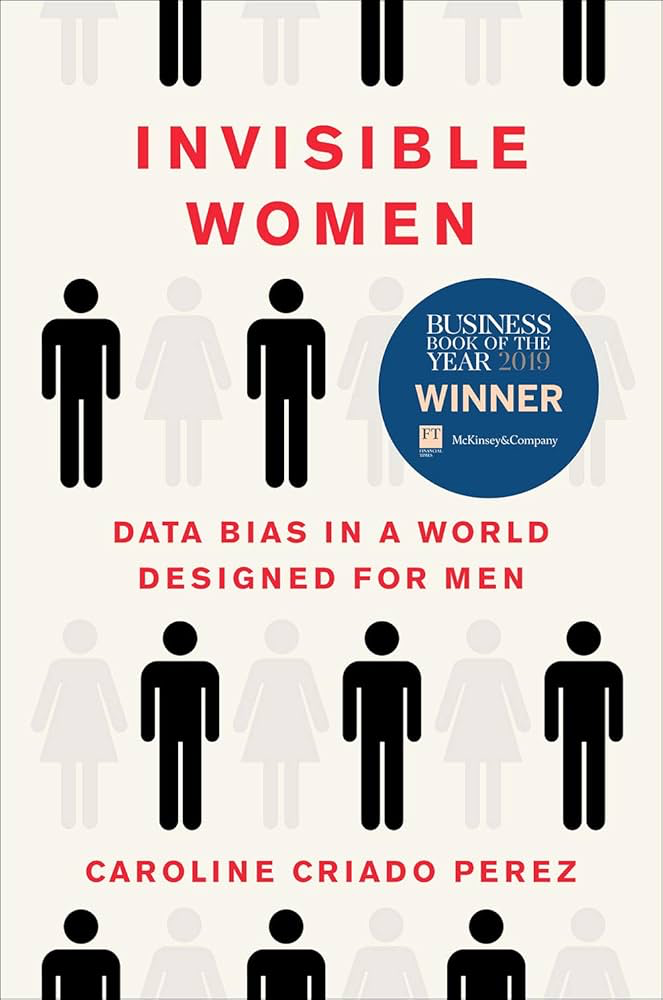

Discussion
Sciences sociales
Social Studies
Trois lectures sur des mécanismes sociaux souvent inaperçus : les biais de genre dans la conception des systèmes, la logique du capital social et la puissance symbolique des rites d'institution.
Three readings on social mechanisms that often go unnoticed: gender bias in system design, the logic of social capital, and the symbolic power of institutional rites.
Femmes invisibles
Invisible Women
En documentant l'absence systématique des femmes dans les données qui servent à concevoir nos infrastructures, nos médicaments, nos algorithmes et nos villes, Criado Perez met au jour un angle mort structurel. Ce n'est pas une question de mauvaise volonté : c'est l'effet mécanique d'un défaut de représentation dans les processus de production de connaissance. Un plaidoyer rigoureux pour une conception désagrégée par genre, dont les implications dépassent largement le seul cadre féministe.
By documenting the systematic absence of women from the data used to design our infrastructure, medicines, algorithms, and cities, Criado Perez exposes a structural blind spot. This is not a matter of ill will: it is the mechanical effect of a representation gap in how knowledge is produced. A rigorous case for gender-disaggregated design, with implications that extend well beyond a strictly feminist frame.
CRIADO PEREZ, Caroline. Femmes invisibles : comment le monde est fait pour les hommes. Paris : Éditions des équateurs, 2020.
Criado Perez, C. (2019). Invisible Women: Data Bias in a World Designed for Men. London: Chatto & Windus.

Le capital social : notes provisoires
Dans ce texte bref mais décisif, Bourdieu définit le capital social comme l'ensemble des ressources — actuelles ou potentielles — liées à l'appartenance à un réseau durable de relations. Sa contribution centrale est de montrer que ce capital est convertible : il peut se transformer en capital économique ou culturel, et il est inégalement distribué selon les positions sociales. Une grille d'analyse qui permet de comprendre pourquoi l'accès aux ressources n'est jamais seulement une question de mérite ou de compétence.
In this brief but decisive text, Bourdieu defines social capital as the aggregate of actual or potential resources linked to membership in a durable network of relationships. His central contribution is to show that this capital is convertible: it can be transformed into economic or cultural capital, and it is unequally distributed according to social position. A framework for understanding why access to resources is never simply a matter of merit or competence.
BOURDIEU, Pierre. « Le capital social : notes provisoires ». Actes de la recherche en sciences sociales, 1980, n° 31, p. 2-3.
Bourdieu, P. (1980). 'Le capital social: notes provisoires'. Actes de la Recherche en Sciences Sociales, 31, pp. 2–3.
Les rites comme actes d'institution
Bourdieu y déplace la question des rites de passage : l'enjeu n'est pas de marquer une transition, mais d'instituer une différence — de transformer une frontière sociale arbitraire en limite naturelle et légitime. Ce texte est une clé de lecture pour comprendre comment des catégories sociales (diplômé, noble, citoyen) sont produites et entretenues par des actes performatifs collectifs. La distinction n'est pas entre celui qui est passé et celui qui ne l'est pas encore, mais entre celui qui est institué et celui qui ne le sera jamais.
Bourdieu shifts the question of rites of passage: the point is not to mark a transition, but to institute a difference — to transform an arbitrary social boundary into a natural and legitimate limit. This text is a key to understanding how social categories (graduate, noble, citizen) are produced and maintained through collective performative acts. The distinction is not between the one who has passed and the one who has not yet, but between the one who is instituted and the one who never will be.
BOURDIEU, Pierre. « Les rites comme actes d'institution ». Actes de la recherche en sciences sociales, 1982, n° 43, p. 58-63.
Bourdieu, P. (1982). 'Les rites comme actes d'institution'. Actes de la Recherche en Sciences Sociales, 43, pp. 58–63.